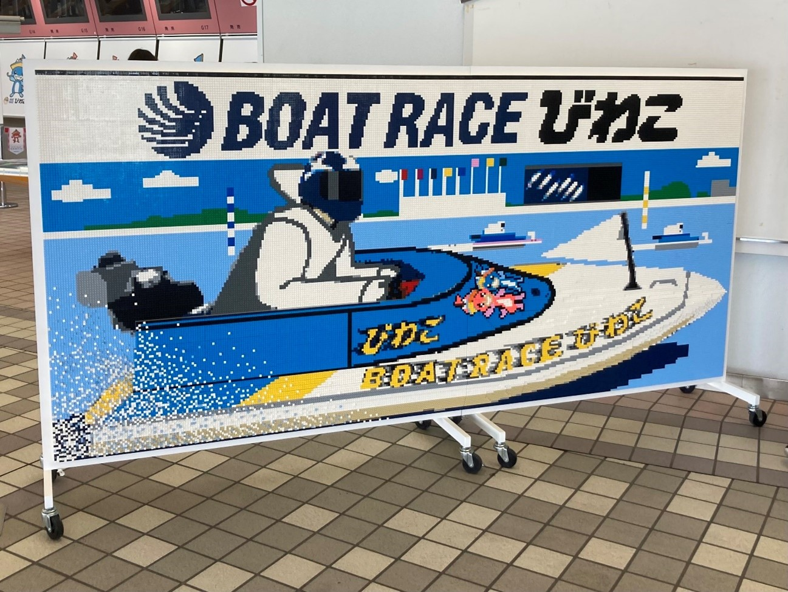
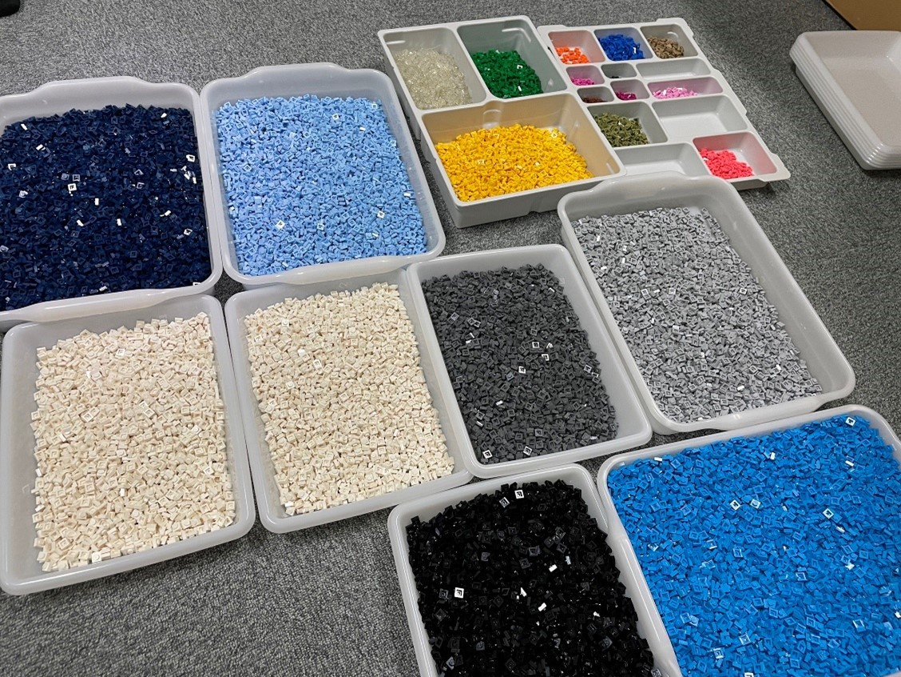
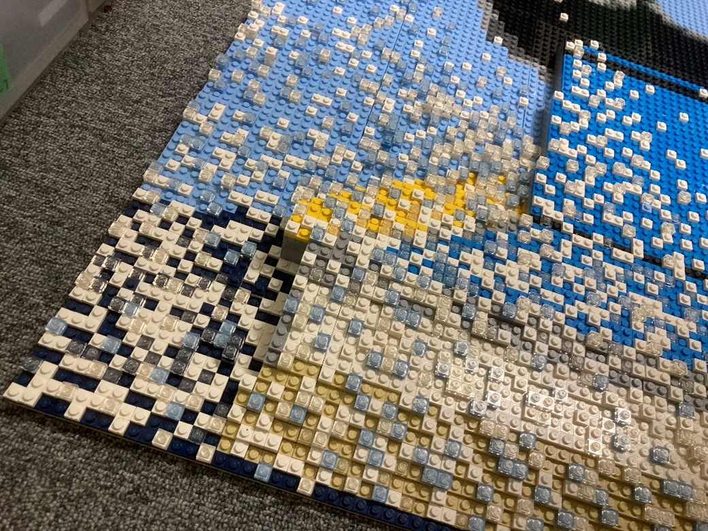
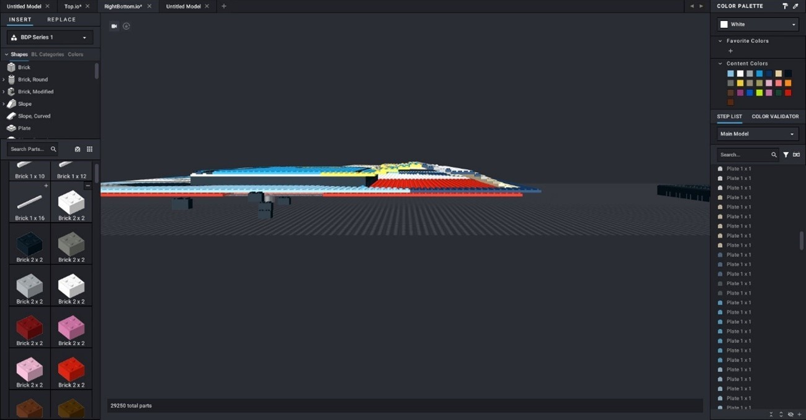

ボートレースびわこ
大阪大学レゴ部の ると です。
2023年度は展示イベントや制作依頼、ワークショップ、学祭などの活動状況を記事として更新してみようと思います。まずは2023年の年明けごろにお受けした製作依頼に関する記事です。
作品制作の様子
今回、ボートレースびわこ 様からのご依頼で写真スポットとなる大きなドット絵パネルの制作を行いました。サイズは横約280cm(352ドット)、縦約130cm(164ドット)となっており、実物のボートの全長289.5cmにかなり近いサイズとなっております。
表面のドット絵は、「レゴらしさ」が出るようにすべてレゴの最小単位と言える1 x 1プレートというとても小さく薄いパーツで作成し、船体部分については立体感が出るようにボートの形に沿って高くしております。また1x1プレートだけでも57,728枚も使っており、かなり多くのパーツを使用しました。
ボートの後ろに上がる水しぶきについてはさらに立体的になるよう設計しており、力を入れた部分となっております。
制作の大まかな流れとしては以下の通りです。
- 2022年11月末～1月初旬：ご連絡をいただき、サイズやデザインの決定を行う。
- 2023年1月中旬：正式に依頼をお受けし、パーツの発注を行う。
- 2023年2月中旬：2/9(テスト期間終了後)から2/18までの1週間程度で集中的にドット絵やベース部分を分割して制作。総勢18名の部員が参加。
- 2023年2月21、22日：ベース部分の組み立ておよびドット絵の貼り付けを行い納品。
- 2023年2月25、26日：展示。
今回制作したものはドット絵であったため、いただいた原画をドット化して調整する形とする予定でした。しかし、船体部分を立体的に作るためにstudioという設計ソフトを用いて3Dモデルを作って大まかな設計を行いました。
ここからは僕自身のこの依頼に関する感想等を書きたいと思います。
本依頼は部長になって初めての制作依頼であり、大学の授業等との両立が困難に感じる時期もありましたが、レゴブロックをずっと考えていられる楽しい時間でもありました。基本は平面であるドット絵パネルとは言っても横3m、縦1.3mという大きな作品を制作したことは当然なく、設計ソフトstudioのデータが重くパソコンが固まってしまうといったハプニングもあり色々と苦戦しましたが、その分完成時の達成感は大きなものでした。
最後になりましたが、本依頼に関わってくださった多くの方にはたいへんお世話になりました。ありがとうございました。
ると